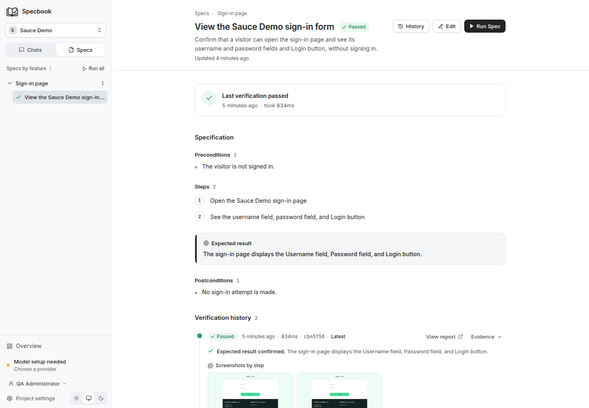

Self-hosted · Open source
Describe the behavior.
Keep checking it.
Specbook turns conversations into readable specifications and browser Specs. Run them after a deploy, investigate failures, and review changes to the agreed behavior.

From a conversation to a repeatable Spec.
Your team describes what should happen. The agent explores the app, writes the Spec, and gives you a result you can inspect.
Read how Specs workDescribe a flow
Start a chat or let discovery map the app. Add credentials and steering only when the agent needs them.
Agree on the behavior
Read the steps and expected result in
spec.yml. The browser implementation lives beside it inspec.ts.Run it when something changes
Trigger Specs from a deploy, CI, a schedule, or the app. See results and screenshots in the project Overview.
Follow the result back to the evidence.
This recording comes from the running app, using a real Spec against Sauce Demo.

Overview groups recent runs. Open a result to see the Speced behavior, step screenshots, and committed changes. The recording has no audio.
A failed Spec needs a diagnosis.
The healer investigates failures in the browser. It distinguishes a test that needs repair from an app bug or a blocked environment.
Pass on retry? Specbook marks the Spec as flaky and keeps the result in its history.
- Locator or timing drift
- A minimal implementation change, verified by another run, arrives for review as a diff.
- Application bug
- A report with reproduction steps and evidence. Keep the test that exposed the problem.
- Missing access or unavailable app
- The agent retries or asks a specific question in Needs you, then resumes when you answer.
Review the change, down to the line.
The expected behavior is the contract. The agent can propose an implementation fix, but changes to steps or expected results need a human decision.
Read proposed edits as diffs before approving them. Approvals create a Git commit, so the decision stays connected to the Spec.
spec.ymltitle: View the Sauce Demo sign-in form
steps:
- Open the Sauce Demo sign-in page
- See the username field, password field,
and Login button
expectedResult: The sign-in page displays
the Username field, Password field,
and Login button.Readable behavior in YAML. An executable Playwright Spec beside it.
Check the preview before the merge.
Trigger all or selected Specs with a project CI token. Point a run at a preview URL, wait for the batch, and collect JUnit results or a Markdown summary.
Connect your pipelineWorks with your existing pipeline
GitHub Actions · GitLab CI · Bitbucket Pipelines · CircleCI · Jenkins
A dependency-free client script handles trigger, wait, reports and an updated PR or merge-request comment. Deploy webhooks can also signal a new version for the agent to check.
Choose the Specs your team needs.
Discovery proposes a list of Specs. Select which ones to add, then review each Spec's first result.
Coverage compares confirmed areas, roles and rules with saved Specs, shows feature health and tracks batch pass rates. It shows where Specs exist, not complete behavioral coverage.
- Named environments
- Run the same Specs against Production, Staging or a preview, with separate URLs and credential overrides.
- Browser and API Specs
- Use deterministic Playwright Specs for the UI and the request fixture for APIs, with redacted step evidence.
Specbook and runtime-AI testing
AI helps discover behavior, generate Specs and investigate failures. Normal runs execute saved Playwright code without a model call.
Reviewable and self-hosted
Expected behavior and executable Specs stay in your Git repository. Review proposed changes as diffs. Runtime-AI testing can adapt actions during a run; Specbook keeps the saved Spec reviewable in your repository.
Run Specbook on your infrastructure.
You operate the instance and its storage. Local accounts and OpenID Connect provide sign-in; admins, editors and viewers have separate permissions.
Read the security and data modelKnow what leaves the server
Prompts, Specs and browser observations go to your configured model provider. Screenshots can go too; an administrator can turn that off. Your provider’s data policy still applies.
- Secrets
- Encrypted at rest. Keep the encryption key and backups under your control.
- Agent actions
- Origin restrictions apply to browser work. Discovery and autonomous work also check for destructive actions. Pause a project or the whole instance.
- Evidence and history
- Set retention periods, inspect the audit log, and back up your data before upgrading.
Start with your own instance.
Install Docker, then run this command. Specbook includes the browser and test runner.
Open localhost:4001, create your administrator account, connect a model, and try the demo app.
Deploy with HTTPSdocker run -d --name specbook --restart unless-stopped --shm-size=1g \
-p 127.0.0.1:4001:4001 \
-p 127.0.0.1:1455:1455 -p 127.0.0.1:53692:53692 \
-e PI_OAUTH_CALLBACK_HOST=0.0.0.0 \
-v specbook-storage:/app/apps/backend/storage \
ghcr.io/gustavo-ferreira03/specbook:latestThe named volume keeps your project data across container restarts.
Try it with one of your team’s flows.
Tell us which application you want to check and what makes its current tests hard to maintain.